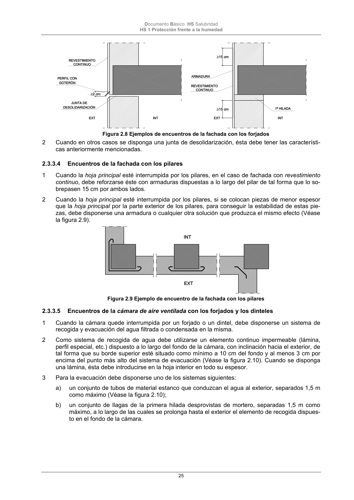

DB-HS · Página 25 · versión 2022-06-14
SHA256: 68df3caacc95f71aee2ec1ba7b2c65ae66155c21e3a8785521b8fdd4fd640d3b · página física 25 de 184 · métodos de encabezado
solo si están cotejados.
Formatos: Markdown · JSON de bloques · PDF p. 25 · imagen PNG
Documento Básico HS Salubridad HS 1 Protección frente a la humedad 25 Figura 2.8 Ejemplos de encuentros de la fachada con los forjados 2 Cuando en otros casos se disponga una junta de desolidarización, ésta debe tener las característi- cas anteriormente mencionadas. 2.3.3.4 Encuentros de la fachada con los pilares 1 Cuando la hoja principal esté interrumpida por los pilares, en el caso de fachada con revestimiento continuo, debe reforzarse éste con armaduras dispuestas a lo largo del pilar de tal forma que lo so- brepasen 15 cm por ambos lados. 2 Cuando la hoja principal esté interrumpida por los pilares, si se colocan piezas de menor espesor que la hoja principal por la parte exterior de los pilares, para conseguir la estabilidad de estas pie- zas, debe disponerse una armadura o cualquier otra solución que produzca el mismo efecto (Véase la figura 2.9). Figura 2.9 Ejemplo de encuentro de la fachada con los pilares 2.3.3.5 Encuentros de la cámara de aire ventilada con los forjados y los dinteles 1 Cuando la cámara quede interrumpida por un forjado o un dintel, debe disponerse un sistema de recogida y evacuación del agua filtrada o condensada en la misma. 2 Como sistema de recogida de agua debe utilizarse un elemento continuo impermeable (lámina, perfil especial, etc.) dispuesto a lo largo del fondo de la cámara, con inclinación hacia el exterior, de tal forma que su borde superior esté situado como mínimo a 10 cm del fondo y al menos 3 cm por encima del punto más alto del sistema de evacuación (Véase la figura 2.10). Cuando se disponga una lámina, ésta debe introducirse en la hoja interior en todo su espesor. 3 Para la evacuación debe disponerse uno de los sistemas siguientes: a) un conjunto de tubos de material estanco que conduzcan el agua al exterior, separados 1,5 m como máximo (Véase la figura 2.10); b) un conjunto de llagas de la primera hilada desprovistas de mortero, separadas 1,5 m como máximo, a lo largo de las cuales se prolonga hasta el exterior el elemento de recogida dispues- to en el fondo de la cámara.
